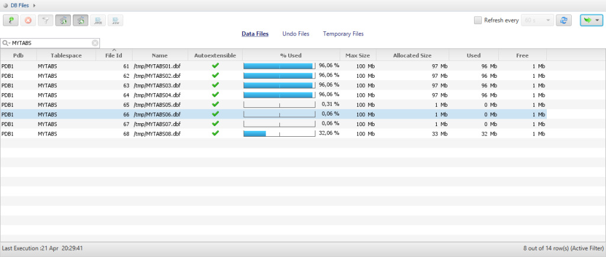
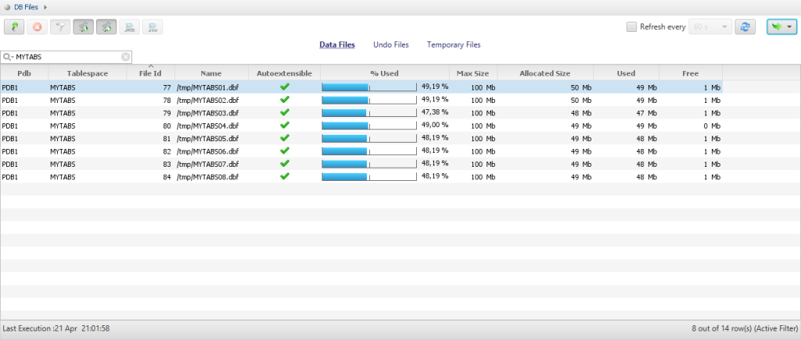

When we have a tablespace with multiple datafiles, we are used to seeing the datafiles filled evenly, the extents being allocated in a round-robin fashion. In the old time, we used that to maximize performance, distributing the tables to all disks. Today, we use LVM striping, maximum Inter-Policy, ASM even distribution. And we may even use bigfile tablespaces, so that we don’t care about having multiple datafiles. But recently, during test phase of migration, I came upon something like this: 
To reproduce the case, I’ve created a tablespace with 8 datafiles:
SQL> create tablespace MYTABS datafile 2 '/tmp/MYTABS01.dbf' size 1M autoextend on maxsize 100M, 3 '/tmp/MYTABS02.dbf' size 1M autoextend on maxsize 100M, 4 '/tmp/MYTABS03.dbf' size 1M autoextend on maxsize 100M, 5 '/tmp/MYTABS04.dbf' size 1M autoextend on maxsize 100M, 6 '/tmp/MYTABS05.dbf' size 1M autoextend on maxsize 100M, 7 '/tmp/MYTABS06.dbf' size 1M autoextend on maxsize 100M, 8 '/tmp/MYTABS07.dbf' size 1M autoextend on maxsize 100M, 9 '/tmp/MYTABS08.dbf' size 1M autoextend on maxsize 100M 10 / Tablespace created.
This was a 11g to 12c migration, with Data Pump, and a good occasion to convert all LOB to SecureFiles with the transform=lob_storage:securefile parameter. And this tablespace is the one where the LOB segments are stored. I reproduced it with:
SQL> create table MYTABLE ( x clob ) tablespace USERS 2 LOB(x) store as securefile MYLOBSEG (tablespace MYTABS disable storage in row); Table created.
Then I inserted about 80MB:
SQL> insert into MYTABLE select lpad('x',100000) from xmltable('1 to 8000') ;
8000 rows created.
SQL> select file_id,file_name,blocks,user_blocks from dba_data_files where tablespace_name='MYTABS' order by file_id;
FILE_ID FILE_NAME BLOCKS USER_BLOCKS
---------- ------------------------------ ---------- -----------
61 /tmp/MYTABS01.dbf 128 120
62 /tmp/MYTABS02.dbf 128 120
63 /tmp/MYTABS03.dbf 128 120
64 /tmp/MYTABS04.dbf 9344 9336
65 /tmp/MYTABS05.dbf 128 120
66 /tmp/MYTABS06.dbf 128 120
67 /tmp/MYTABS07.dbf 128 120
68 /tmp/MYTABS08.dbf 128 120
8 rows selected.
SQL> select file_id,segment_type,sum(blocks) from dba_extents where tablespace_name='MYTABS' group by file_id,segment_type order by file_id,segment_type;
FILE_ID SEGMENT_TYPE SUM(BLOCKS)
---------- ------------------ -----------
64 LOBSEGMENT 9216
65 LOBINDEX 8
65 LOBSEGMENT 24
And I continued to load rows, and observed the datafiles filled to their maxsize one after the other, without numeric or alphabetical order.
SQL> select file_id,file_name,blocks,user_blocks from dba_data_files where tablespace_name='MYTABS' order by file_id;
FILE_ID FILE_NAME BLOCKS USER_BLOCKS
---------- ------------------------------ ---------- -----------
61 /tmp/MYTABS01.dbf 8320 8312
62 /tmp/MYTABS02.dbf 12416 12408
63 /tmp/MYTABS03.dbf 12416 12408
64 /tmp/MYTABS04.dbf 12416 12408
65 /tmp/MYTABS05.dbf 128 120
66 /tmp/MYTABS06.dbf 128 120
67 /tmp/MYTABS07.dbf 128 120
68 /tmp/MYTABS08.dbf 128 120
8 rows selected.
SQL> select file_id,segment_type,sum(blocks) from dba_extents where tablespace_name='MYTABS' group by file_id,segment_type order by file_id,segment_type;
FILE_ID SEGMENT_TYPE SUM(BLOCKS)
---------- ------------------ -----------
61 LOBSEGMENT 8192
62 LOBSEGMENT 12288
63 LOBSEGMENT 12288
64 LOBSEGMENT 12288
65 LOBINDEX 8
65 LOBSEGMENT 24
Here are some screenshots during this load
This occurs only with SecureFiles. With the same load into LOB stored as BasicFile I got the following distribution: 
Note that the inserts to BasicFile were about two times slower than the same into SecureFiles.
I don’t see any bad consequences about that, and this may even be an improvement when concurrent sessions are loading the LOBs. When the datafile picked-up looks random, a guess is that it depends on a process ID to try to distribute the concurrent load. And if you want to distribute data over multiple disks, then you should do it at a lower level. However, it is 30 years behavior that changes and it’s better to be aware of it: datafiles may reach their maxsize even when the tablespace is not full. I order to be sure that it is the expected behavior, I opened an SR with easy to reproduce testcase. Status is ‘review update’ for 9 days (SR 3-14677784041) and I’ll update this post is I get an answer.
{kind=link}
{kind=link}
{kind=link}
{kind=link}
Hi Franck, this may be related to deduplication (which requires the advanced compression option). I.e. better deduplication possible if everything remains in a single file initially? Interestingly the distribution over all files work correctly if you create the LOB deduplicated and change it to keep_duplicates:
create table MYTABLE ( x clob ) tablespace USERS LOB(x) store as securefile MYLOBSEG (tablespace MYTABS disable storage in row deduplicate); insert into MYTABLE select lpad('x',100000) from xmltable('1 to 8000') ; --> 256 Blocks allocated in file /tmp/MYTABS04.dbfWhen you then do a the lob-data is redistributed equally over all files. I.e. after the command completed the testcase showed 1152 Blocks allocated in each and every datafile of the MYTABS tablespace.Regards Clemens
Thanks Clemens, Yes, it seems that alter table distributes evenly. However, it seems it does not release previous space: https://twitter.com/FranckPachot/status/856438458935541761 … I’ll need to investigate further those SecureFiles to trust them…
Hello Franck,
if you switch off “Tablespace-level space (Extent) pre-allocation.” then the extents are allocated evenly across the files. E.g.
ALTER SYSTEM SET “_ENABLE_SPACE_PREALLOCATION” = 0 scope=memory;
See My Oracle Support Note: SMCO (Space Management Coordinator) For Autoextend On Datafiles And How To Disable/Enable (Doc ID 743773.1) and https://technology.amis.nl/wp-content/uploads/2013/04/SecureFile-Lobs.pdf
Regards Clemens